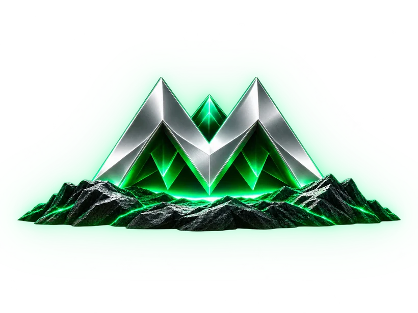
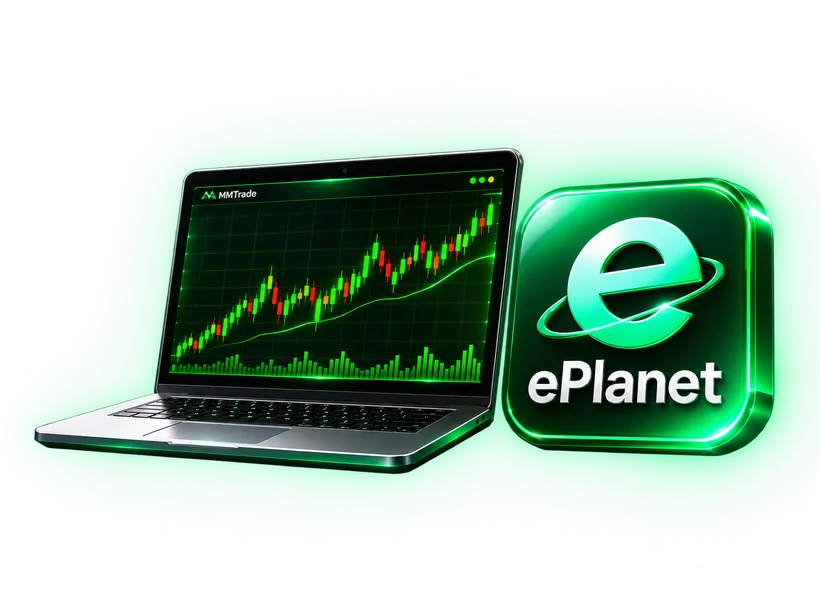
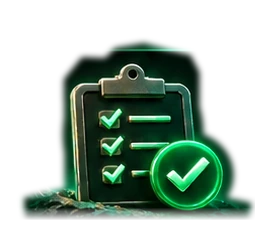

معرفی مجموعه MMTrade

MMTrade چیست؟
مجموعهای تخصصی در حوزه تحلیل بازارهای مالی، آموزش کاربردی، مدیریت ریسک و آشنایی با راهکارهای معاملاتی.
تحلیل تخصصی
آموزش کاربردی
پشتیبانی مداوم
چالش 10X چیست؟
چالش 10X
مسیر هدفگذاریشده برای آشنایی با اجرای معاملات، مدیریت ریسک و پیگیری پیشرفت؛ 10X هدف چالش است، نه سود تضمینی.
هدفگذاری روشن
رشد چندبرابری
مسیر حرفهای
چرا این چالش راهاندازی شد؟
ایجاد مسیر واقعی و شفاف برای رشد سرمایه
انتقال تجربه و استراتژیهای عملی
حذف آزمونوخطاهای پرهزینه
فرصت رشد برای همه تریدرها
تیم و استراتژی معاملاتی
ترکیب تجربه، تحلیل و نظم
رویکردی مبتنی بر بررسی دادههای بازار، تدوین سناریوهای معاملاتی و توجه به مدیریت ریسک؛ بدون ادعای سود قطعی.
تحلیل دادهمحور
استراتژی ترکیبی
مدیریت ریسک
ترید شخصی یا کپیتریدینگ؟
ترید شخصی
کپیتریدینگ
× نیاز به تجربه بالا
× صرف زمان زیاد
× ریسک و استرس بیشتر
✓ استفاده از تجربه تیم حرفهای
✓ صرفهجویی در زمان
✓ مدیریت ریسک اصولی
راهنمای استفاده و اتصال

- ۱ ثبتنام در بروکر ePlanet
- ۲ افتتاح حساب معاملاتی
- ۳ اتصال به پرتفوی کپیتریدینگ
- ۴ شروع معاملات در چالش 10X
ثبتنام در چالش 10X

همین حالا در چالش 10X ثبتنام کنید!
به جمع شرکتکنندگان چالش 10X بپیوندید و مراحل آشنایی، ثبتنام و اتصال را آغاز کنید.
این یک دمو است و ثبتنام واقعی تا اتصال API انجام نمیشود.